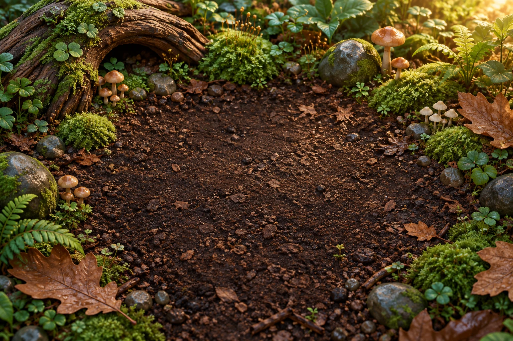

YOUR LIVING TERRARIUM
나의 사육장 작은 숲 01
오늘도 작은 숲에 새로운 하루가 시작됐어요.
함께하는 등각류
6
/
20
마리
분당 예상 수익
40
G
발견한 종
1
/ 8종

이끼 숲 사육장
Lv. 1
포근한 오후
성장하기 좋은 날이에요
등각류를 눌러 관찰해 보세요
모두 편안하게 지내고 있어요
6마리 거주 중
우리 숲의 식구들 1종
FIELD NOTES
등각류 도감 1 / 8
낙엽 아래 숨어 있던 작은 세계를 기록해요.
12%
도감 완성
발견한 종은 분양 후에도 도감에 남아요.
종별 수익·희귀도·환경 수치는 게임을 위한 설정이며 실제 사육 지침이 아닙니다.
THE LITTLE EXCHANGE
분양 마켓
잘 자란 식구들에게 새집을 찾아주고, 숲을 더 넓혀요.
FOREST EXPLORATION
새로운 식구를 만날 시간
탐색 한 번에 같은 종 2마리를 데려와요. 중복 종도 만날 수 있어요.
일반 65%
희귀 20%
에픽 10%
전설 3.5%
신화 1.5%
ROOM TO GROW
사육장 업그레이드
더 넓고, 더 촉촉하고, 더 편안한 작은 숲.
GROVE JOURNAL
사육 일지
작은 탄생부터 새로운 발견까지, 우리 숲의 이야기.
진행 상황은 이 기기·브라우저에 자동 저장됩니다. 브라우저 데이터를 삭제하면 기록이
사라져요.
저장 파일을 내보내면 다른 브라우저에서도 이어서 할 수 있어요. 자리를 비운 동안 최대
8시간까지 성장합니다.